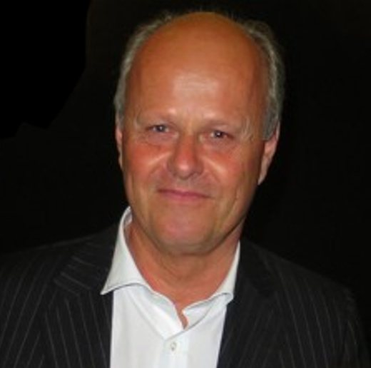
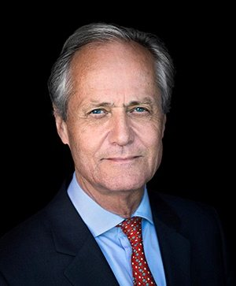
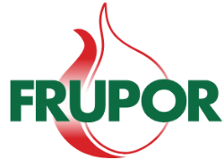
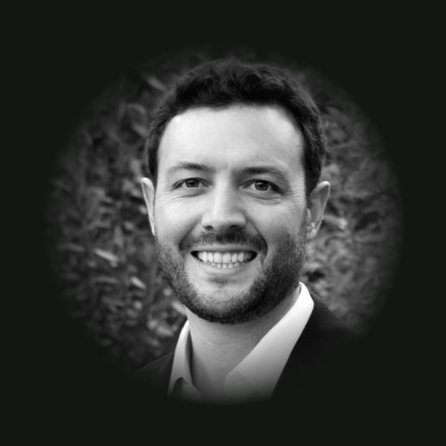
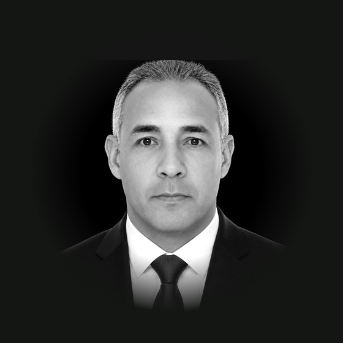
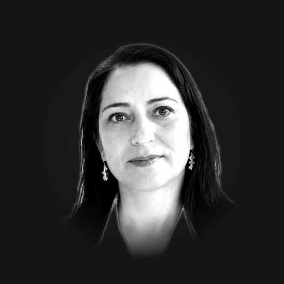
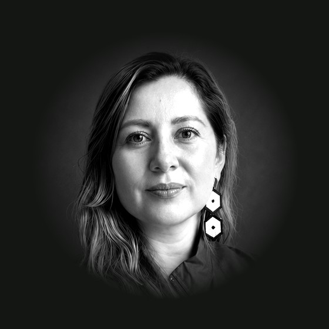
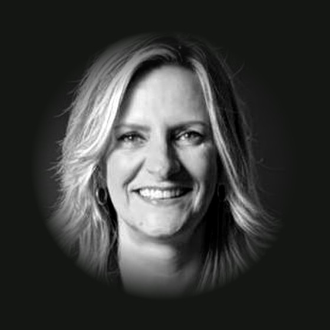

Quiénes están detrás de PrestigeWho is behind Prestige
Un equipo con raíces en la región y el respaldo de socios industriales internacionales con décadas de experiencia.A team with roots in the region, backed by international industrial partners with decades of experience.
Socios comprometidos a largo plazoPartners committed for the long term
Ole Martin Siem y Kristian Siem son los socios de Prestige: industriales con una larga trayectoria en agricultura y energía.Ole Martin Siem and Kristian Siem are the partners behind Prestige, industrialists with deep experience in agriculture and energy.

Ole Martin Siem
Fundador y Director General de FRUPOR (Portugal) desde 1987, un grupo agrícola que exporta a toda Europa. Economista agrícola y agrónomo, con décadas de experiencia en producción y comercio de alimentos en Europa, África y América del Sur.Founder and Managing Director of FRUPOR (Portugal) since 1987, an agricultural group that exports across Europe. An agricultural economist and agronomist, with decades of experience in food production and trade across Europe, Africa and South America.

Kristian Siem
Fundador y presidente ejecutivo de Siem Industries desde 1982, un grupo industrial internacional con presencia en energía, transporte marítimo y otros sectores. Administrador de empresas por el Instituto de Negocios de Oslo.Founder and Managing Chairman of Siem Industries since 1982, an international industrial group active in energy, shipping and other sectors. He holds a degree in business administration from the Oslo Institute of Business.
Dos grupos detrás de PrestigeTwo groups behind Prestige

Grupo agroindustrial portugués que opera desde 1987 y exporta productos frescos a Europa. Le aporta a Prestige experiencia agrícola de largo plazo.A Portuguese agro-industrial group active since 1987, exporting fresh produce to Europe. It brings Prestige long-term agricultural experience.
Grupo industrial internacional con presencia en energía, transporte marítimo y otros sectores. Le aporta a Prestige respaldo financiero y una visión de capital paciente.An international industrial group active in energy, shipping and other sectors. It brings Prestige financial backing and a patient-capital outlook.
El equipo que dirige la operaciónThe team that runs the operation

Daniel Hoyos
Administrador de empresas con maestría en gestión empresarial. Lidera la estrategia, el crecimiento y la expansión de Prestige Group, y articula la operación con la junta directiva.A business administration graduate with a master's in business management. He leads Prestige Group's strategy, growth and expansion, and connects the operation with the board of directors.

Luis Gómez
Ingeniero de producción agroindustrial con una larga trayectoria en cultivos. Lidera la operación de la plantación y la planta, y viene subiendo de forma sostenida los rendimientos del cultivo y la extracción.An agro-industrial production engineer with a long track record in crops. He leads the plantation and the mill, and has steadily raised both cultivation and extraction yields.

Nidia Solano
Memoria viva de la compañía y una de sus voces más experimentadas. Lidera administración, logística, compras y campamento desde Villavicencio, y conoce como nadie los retos del terreno.A living memory of the company and one of its most experienced voices. She leads administration, logistics, procurement and the camp from Villavicencio, and knows the realities on the ground better than anyone.
Bibiana Godoy
Contadora que ha estructurado los procesos contables del grupo para un cumplimiento fiscal y regulatorio impecable a medida que crecemos. Pieza clave en cualquier proceso de debida diligencia.An accountant who has built the group's accounting for impeccable tax and regulatory compliance as we grow. A key player in any due-diligence process.

Carolina Ramírez
Lidera la planeación financiera de Prestige Group: construye los presupuestos, las proyecciones y los análisis que guían las decisiones de inversión y de crecimiento de la compañía.Leads Prestige Group's financial planning: she builds the budgets, forecasts and analysis that guide the company's investment and growth decisions.

Jenny Gwinner
Psicóloga con experiencia manejando equipos operativos grandes. Fortalece la selección, la seguridad y salud en el trabajo y la cultura, para acompañar el crecimiento de la compañía.A psychologist experienced in managing large operational teams. She strengthens recruitment, workplace health and safety, and culture, to support the company's growth.